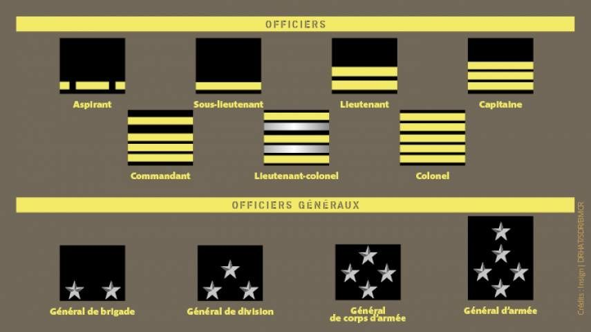

Nous sommes ravis de vous accueillir chez nous.
Nous vous accompagnerons durant votre visite sur le site du RSMA Mayotte.
Le détachement du SMA de Mayotte a été créé le 1er janvier 1988. Devenu le groupement du service militaire adapté (GSMA) en 2000, il prend l'appellation de bataillon du service militaire adapté (BSMA) de Mayotte le 1er juillet 2013. Puis il prend l'appellation de régiment du service militaire adapté (RSMA) le 31 mars 2018 et défile le 14 juillet de cette même année à Paris pour présenter le régiment au président de la République.Il est implanté à Combani à environ 30 minutes en voiture de Mamoudzou, au cœur de la Grande Terre. Il est constitué alors, par une compagnie du 4e RSMA de La Réunion. En 1991, il portait le nom de Détachement du service militaire adapté de Mayotte (DSMAM). Le détachement devient ensuite autonome et prend le nom d'Unité du service militaire adapté de Mayotte. Formant corps depuis le 1er août 1996, elle devient Groupement du service militaire adapté (GSMA.M) en septembre 2000 puis bataillon du service militaire adapté (BSMA) de Mayotte le 1er juillet 2013[1].
Le 31 mars 2018, il prend l'appellation de régiment du service militaire adapté de Mayotte.Il comprend un état-major et deux compagnies de formation professionnelle. Le 14 juin 2001, le GSMA de Mayotte hérite du patrimoine du 4e RIMa et reçoit la garde du drapeau[2]. Le 3 juillet 2018 lors de la passation de commandement entre le lieutenant-colonel Dominique Bonte et le lieutenant-colonel Frédéric Jardin, il rend le drapeau du 4e RIMa dont il a la garde et reçoit des mains du général Thierry Deladoucette son nouveau drapeau portant dans ses plis, régiment du service militaire adapté de Mayotte. Le 14 juillet 2018, un détachement du RSMA-My défile derrière son nouveau drapeau et son chef de corps sur les Champs-Elysées.
Le régiment du service militaire adapté de Mayotte est sous la tutelle du Ministère de l'Outre-mer. Il a pour mission l'insertion socioprofessionnelle de jeunes mahorais en situation d’échec scolaire. La formation des stagiaires dure entre 6 et 10 mois. Elle comporte tout d’abord un mois de FMI (Formation militaire initiale) au terme duquel les stagiaires sont accueillis dans leur compagnie de formation professionnelle. Les filières de formation appartiennent à des secteurs variés : BTP, restauration, sécurité, mécanique, vente, aide à la personne… Elles sont regroupées au sein de trois compagnies : la 1re CFP (Compagnie de formation professionnelle), la 2e CFP et la CCFPI (Compagnie de commandement, de formation professionnelle et initiale). Le RSMA de Mayotte fait partie des FAZSOI (Forces armées de la zone sud de l'océan Indien). Il est basé à Combani sur Grande Terre. Il forme plus de 500 stagiaires par an, et en insère plus de 80 % dans la vie active à l'issue de la formation.

Nous sommes mercredi 19 novembre 2025.
Le Colonnel Benjamin Soubra est le chef de corps du régiment depuis 2024. Le RSMA de Mayotte (Régiment du Service Militaire Adapté) est un dispositif d’insertion socio-professionnelle destiné aux jeunes Mahorais de 18 à 25 ans souhaitant acquérir une formation solide et une première expérience professionnelle. Encadrés par des militaires, les volontaires bénéficient d’un accompagnement structuré fondé sur la discipline, la cohésion et le développement des compétences. Le régiment propose différents parcours, allant des formations techniques (bâtiment, mécanique, sécurité, restauration…) aux formations comportementales et citoyennes, afin de favoriser une intégration durable dans le monde du travail. Reconnue pour son efficacité, cette structure joue un rôle essentiel dans la lutte contre le chômage des jeunes et dans le renforcement de la cohésion sociale à Mayotte. Editer par Bacar Said

Bacar Said est un photographe
A propos de Bacar Said